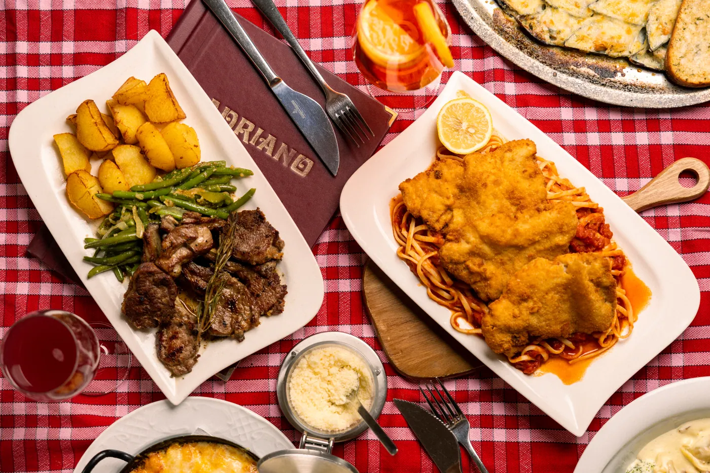

Pizzeria Adriano – Ristorante Pizzeria
Pizza aus dem Holzofen
Ristorante · Pizzeria
Zwei Räume, ein Holzofen.
Das Adriano hat eine lange Geschichte, die bis in die 70er-Jahre zurückreicht. Seit April 2014 führen Drazen und Gordana Spoljar das Lokal – mit Küchenchefin, Pizzakoch und Service-Team, sieben Tage die Woche.
Den Ofen sehen Sie vom Tisch aus: Wer im ersten Raum Platz nimmt, schaut unserem Pizzakoch direkt bei der Arbeit zu.
frisch aus der Küche
Holzfeuer, Teig & Pfanne
Feiern im Adriano
Geburtstag, Firmenessen oder Taufe: Für geschlossene Gesellschaften stellen wir Ihnen das ganze Lokal mit 40 Plätzen zur Verfügung.

Anfrage für Ihre Feier
Schreiben Sie uns Datum und Personenzahl – wir melden uns mit einem Vorschlag.
Gutscheine
Das ideale Geschenk: Freude und Genuss schenken mit einem Gutschein vom Adriano. Jeder beliebige Betrag ist möglich – erhältlich direkt im Lokal.
Besuch & Reservierung
Reservieren
01 33 27 351Mobil: 0681 81 352 828
E-Mail: info@pizzeria-adriano.at
Auch zum Abholen – einfach anrufen und bestellen.
Öffnungszeiten
| Montag – Sonntag | 11:00 – 24:00 |
| Warme Küche | bis 22:30 |
| Ruhetag | keiner |
Pizzeria Adriano
Wallensteinstraße 54, 1200 Wien
Beim Anzeigen wird Google Maps geladen und Ihre IP-Adresse an Google übertragen. Datenschutz